비개발자가 바이브 코딩을 만나기까지
슬롯바운드는 슬롯머신과 디펜스를 섞은 로그라이크예요. 슬롯머신을 돌려 병사를 뽑고, 몰려오는 적을 그 병사들로 막아요. 만든 사람은 1인 개발사 Optima Arch를 차린 김민 님이에요.
코딩이 싫었던 사람
그는 네 살쯤 해외로 이민 가 중국과 영국에서 자랐어요. 축구를 하다 잘 안 돼 영국 대학의 컴퓨터공학과에 들어갔어요. 게임을 만들려면 프로그래밍을 알아야 한다고 생각했거든요. 그런데 첫 수업부터 이해가 안 돼 중퇴하고 혼자 한국으로 왔어요.
군대를 다녀오니 20대 후반이었어요. 자격증도 경력도 없었죠. 게임 개발을 해 본 형이 바이브 코딩을 알려 줬지만, '코딩'이라는 말만 들어도 싫어서 한동안 손대지 않았어요. 유니티 같은 엔진도 여러 번 깔아 봤지만 메뉴가 너무 많아 포기했었고요.
상자 하나가 움직인 순간
작년 말쯤 "지금 아무것도 안 하면 안 된다"는 생각에 처음 해 본 요청이 이거였어요.
AI한테 WASD로 움직이는 상자 하나 만들어 줘 했는데 어 WASD로 상자가 움직이는 거예요. 제가 말한 대로.
— 영상 03:13
이걸로 게임을 만들기로 했어요. 그 전에 완성해 본 게임은 사실상 없어요. 대신 한 게임을 천 시간씩 하기보다, 휴대폰에 100개 넘는 게임을 깔아 두고 "이 게임의 재미는 뭘까"를 따지며 놀아 왔어요. 그 경험이 기획의 밑천이 됐다고 봐요.
아래 그림은 인터뷰 전체에서 나온 날짜와 숫자를 한 줄로 이은 거예요. 왼쪽 회색 구간이 혼자 버틴 시간, 오른쪽 파란 테두리 구간이 데모 이후 일이 커진 시간이에요.
슬롯머신 + 디펜스, 그리고 갈아엎기
군 전역 후 남은 건 적금뿐이었어요. 이번엔 무조건 성공해야 했기 때문에, 애매한 아이디어에 시간을 쓰지 않기로 했어요. 아이디어는 많았지만 "이거다" 싶은 건 좀처럼 오지 않았어요.
CloverPit을 하다 떠오른 한 장면
그러다 슬롯머신 로그라이크 CloverPit을 하던 중이었어요. 같은 심볼 세 개가 맞으면 그 게임은 그냥 돈을 줘요. 그는 "창 심볼 세 개가 맞으면 창병이 튀어나와 나를 위해 싸우면 재밌겠다"고 생각했어요. 당연히 있을 줄 알고 찾아봤는데 없어서 바로 시작했어요.
인디 게임에서는 다들 홍보를 가장 큰 문제로 꼽아요. 그는 반대로 생각했어요. 제품이 비교가 안 될 만큼 재미있으면 홍보는 조금만 해도 따라온다고요. 그래도 확신은 없었어요. 개발 내내 "이게 게임이긴 한가" 의심했고, 자기 게임을 너무 많이 하다 보니 게임처럼 느껴지지 않을 때도 있었어요.
재미없는 프로토타입을 버리지 않은 이유
개발 기간은 4개월로 잡았어요. 그런데 3개월쯤 나온 중간 버전이 재미가 없었어요. 그대로 내는 사람도 많지만, 그는 이대로 내면 애매하게 끝날 거라고 봤어요.
형은 반대로 경고했어요. "아니다 싶어 고치고 또 고치다 완성을 못 하는 게 개발자들이 흔히 하는 실수"라고요. 그래도 그는 아이디어를 버리지 않고 재미있을 때까지 갈아엎었어요. 언젠가 완성은 온다고 믿었대요. 처음 아이디어를 떠올렸을 때의 그 느낌이 다시 온 순간이 크게 세 번 있었어요.
- 처음엔 일반 등급뿐이던 유닛에 희귀도가 생겼어요.
- 같은 유닛을 흡수하면 공격력만 조금 오르던 것이 전직으로 바뀌었어요.
- 퀘스트 같은 요소가 들어갔어요.
아래 화면이 바로 전직이에요. 왼쪽 Sorcerer가 레벨 7이 되자 가운데에 'Class Promotion' 카드가 떠서 Elf Mage로 바뀌어요. 카드에 체력 109, 공격 32 같은 새 능력치가 적혀 있어요.
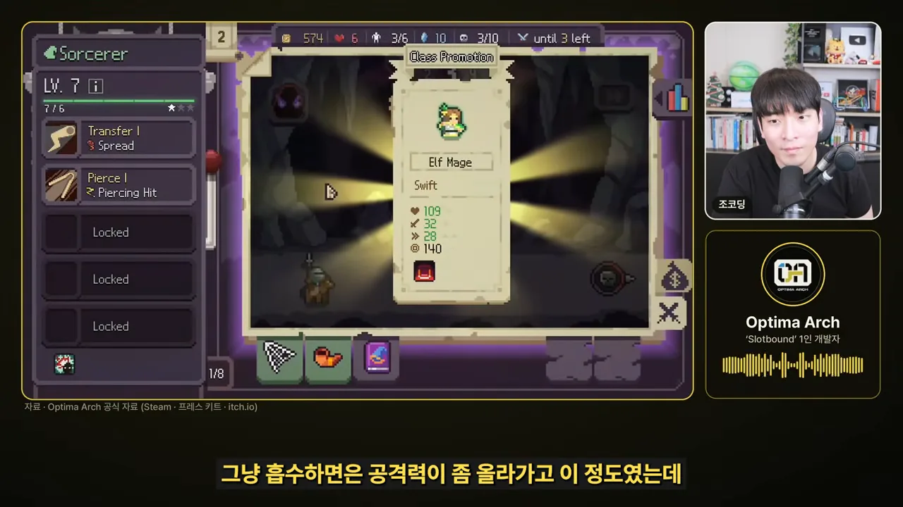
다음 화면은 실제 전투예요. 왼쪽 3×3 칸이 슬롯머신이고, 창·방패·말·활 같은 심볼이 보여요. 가운데 사막 전장에서 뽑힌 병사들이 적 무리와 싸워요.
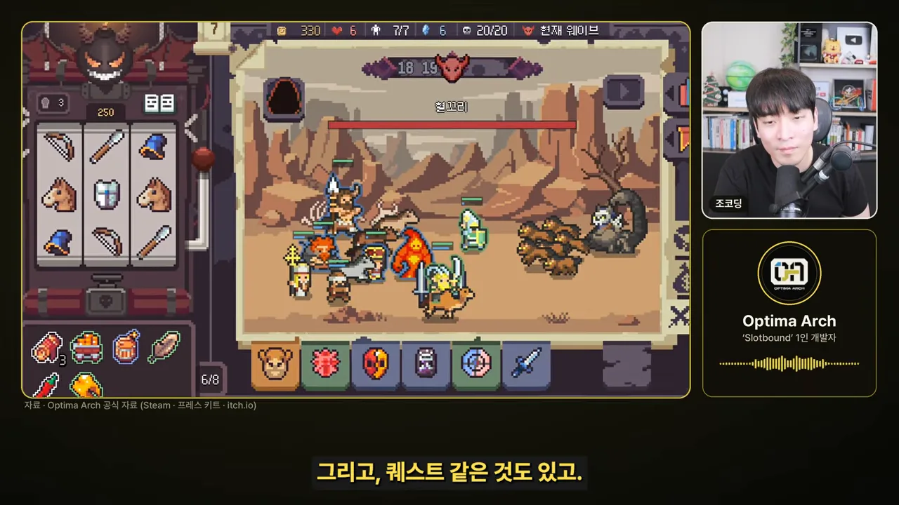
데모 공개와 스팀 알고리즘
데모는 지금 게임의 20~30% 분량이에요. 흔히 전체를 만들어 놓고 일부만 보여 주지만, 그는 데모를 낼 당시 딱 데모 분량까지만 만들어 둔 상태였어요.
홍보는 안 먹히고, 데모는 터졌어요
3월에 스팀 페이지를 열고 레딧과 스레드에 글을 올렸어요. 반응은 거의 없었고 위시리스트도 쌓이지 않았어요. 넉 달 뒤인 7월 10일 저녁에 데모를 냈어요. "여기까지 왔는데 마케팅을 미친 듯이 안 하면 후회한다"며 다음 날 아침부터 제대로 하기로 하고 잤어요.
일어나 보니 동시 접속자가 400명이었어요. 시간이 갈수록 올라 스팀 전체 데모 순위 2위까지 갔대요. 아래는 이 대목에 나온 게임 화면이에요. 사막 스테이지 6, 21번째 웨이브에서 병사들이 적 떼와 맞붙고 있어요.
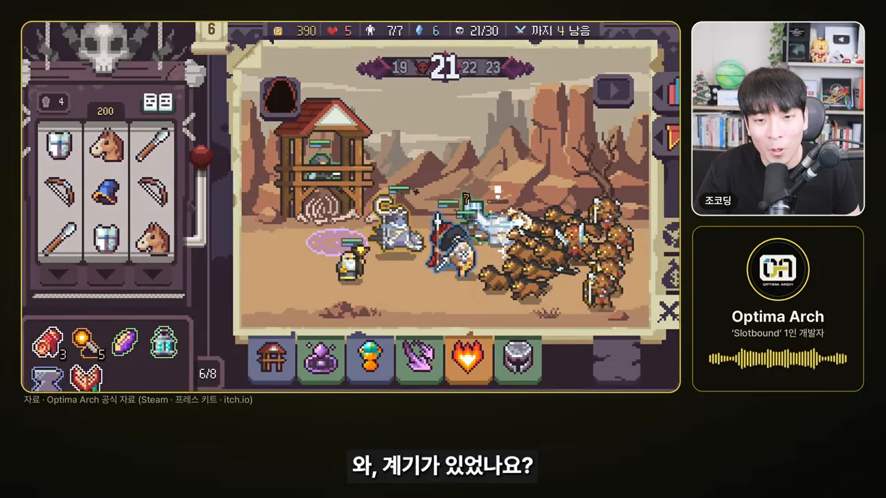
그다음은 유튜버와 스트리머들이 알아서 플레이하며 퍼뜨렸어요. 화면에는 슬롯바운드를 다룬 영상 아홉 개가 조회수와 함께 정리돼 있어요. 왼쪽 위 Gohjoe가 83만 회로 가장 많고, 게이머비누 30만, Dabble 23만, 일본·중국·베트남어 썸네일도 보여요.
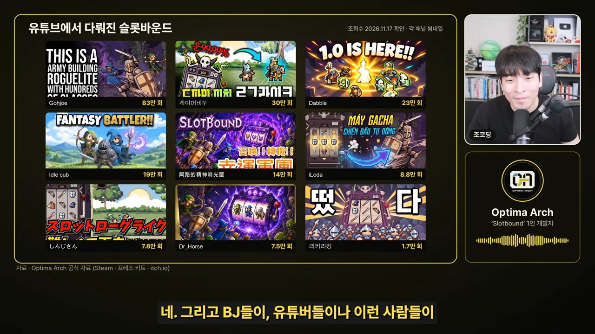
알고리즘을 탄 이유, 본인 추측
스팀 알고리즘이라 정확히는 모른대요. 다만 그가 집착한 건 '한눈에 보이는 재미'였어요. 사람이 스팀 페이지에 들어와 예고편을 보고 위시를 누를지 말지 정하는 건 한순간이에요. 그 순간 머릿속에 재미가 그려지게 만들자는 게 개발 전략이었어요.
내부 지표를 따로 관리하지는 않아요. 대신 플레이어가 주는 피드백을 하나도 놓치지 않고 모아서 반영한다고 해요.
엔진과 AI 도구, 8개월 버티기
에디터를 다룰 줄 몰라서 엔진부터 에디터가 없는 걸 골랐어요. LÖVE(러브2D)예요. 발라트로도 이 엔진으로 만들었대요. 화면을 클릭해 가며 만드는 대신 AI(Artificial Intelligence)에 연결해 말로 시키면 되니, 머리 쓰기 싫은 사람도 빨리 만들 수 있다는 거예요.
요금제 두 개를 번갈아
코드는 개발 기간 대부분 챗GPT 코덱스로 짰어요. 돈이 없어서 3만 원짜리 요금제 계정 두 개를 번갈아 돌렸어요. 출시 한 달쯤 전에는 속도를 끌어올리려고 클로드 200달러 요금제를 질렀어요. 이미지는 주로 제미나이를 썼어요.
토큰이 떨어져도 쉬지 않았어요. 개발할 거리는 음악, 소리, 홍보 글처럼 여러 갈래라서 한쪽이 막히면 다른 쪽을 했대요. 돈 많은 사람들이 토큰 때문에 너무 부러웠다고도 했어요.
8개월, 두 번의 번아웃
데모까지 약 8개월이 걸렸어요. 그사이 큰 번아웃이 두 번 왔어요. 컴퓨터 앞에 앉기도 싫고 모니터만 봐도 토할 것 같았대요. 침대에 누워 "다른 1인 개발자들은 이걸 어떻게 했지" 생각하다가, 이렇게 마음먹었어요.
이거를 못 이겨내면은 나는 90%의 사람 정도는 이걸 못 이겨낼 것 같다. 근데 이걸 이겨내야지 내가 그 10% 안에 들지 않을까
— 영상 15:56
그러고는 스스로 멱살을 잡고 컴퓨터 앞으로 끌고 왔대요. 이 대목에서 영상은 무너진 성터에 망치를 짚고 무릎 꿇은 전사 그림을 띄워요. 슬롯바운드 공식 자료에서 가져온 일러스트예요.
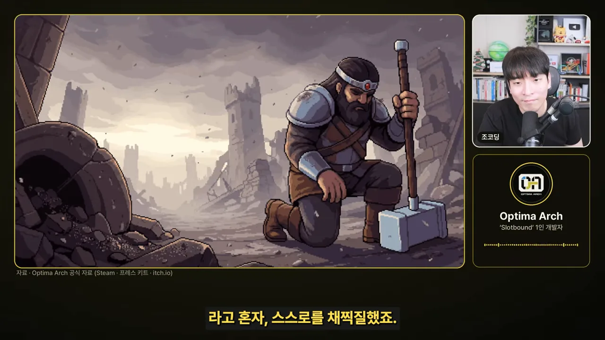
마케팅 0원, 데모로 쌓은 위시리스트
마케팅에는 한 푼도 안 썼어요. 여유도 없었지만, 생각도 분명했어요. 지금 시대의 마케팅은 인플루언서와 릴스·쇼츠가 전부라서, 돈이 드는 오프라인 행사는 꼭 필요하지 않다고 봤어요.
그래서 할 수 있는 건 다 했어요. 아는 모든 SNS(Social Networking Service)에 숏폼을 올렸고, 유튜버들에게는 읽으면 조금이라도 마음이 움직이도록 정성 들여 이메일을 썼어요. 그래도 예고편을 올려 주는 채널들은 아무도 올려 주지 않았대요. 직접 움직여서 된 홍보는 거의 없었다는 게 본인 평가예요.
왜 모바일이 아니라 스팀일까요
모바일 게임 시장은 무료로 풀고 안에서 결제를 유도하는 방식이 많아요. 그는 그런 게임이 게임성보다 돈을 먼저 본다고 느꼈어요. 한 번 돈을 내고 게임을 온전히 즐기는 문화가 가장 잘 자리 잡은 곳이 스팀이라서 골랐어요.
데모를 '다음이 궁금하게' 끊기
출시 전 위시리스트가 10만을 넘은 가장 큰 힘은 데모였어요. 슬롯바운드는 겉보기엔 캐주얼하고 별것 없어 보여요. 그런데 해 보면 볼륨이 꽤 커요. 그는 데모를 끝낸 사람이 "그다음은 뭘까"를 계속 떠올리게 만드는 데 신경 썼어요. 그가 말한 단계를 순서대로 그리면 이래요.
화면에도 그 놀라움이 나와요. 아래 첫 장은 금빛 기둥과 함께 '해골술사 (전설)' 카드가 뜨는 순간이에요. 카드에 확률 0.1%가 적혀 있어요.
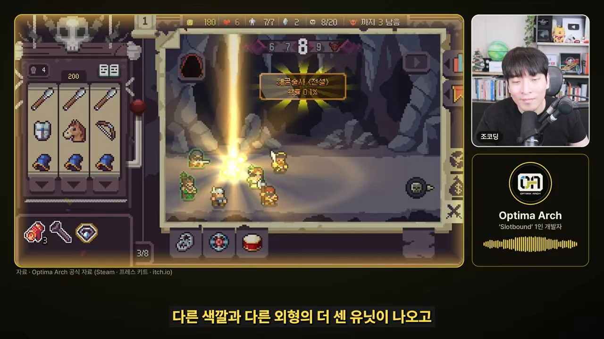
두 번째 장은 화면 전체가 보랏빛으로 바뀌고 아래에 '15 FATE STONES'라는 문구가 뜬 예고편 장면이에요. 진행자 말로는 데모에서 제한을 걸어 두고 본편에서 만나게 한 거예요.
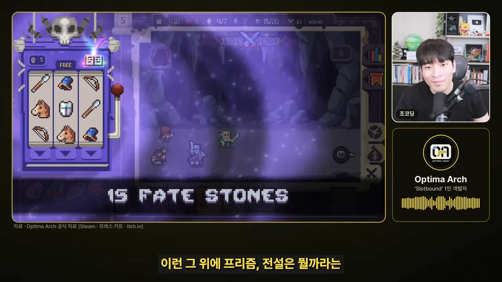
피드백은 갈아엎을 각오로
가장 많은 피드백은 "유닛 당첨이 안 된다"였어요. 본인도 동의해서 데모 때 많이 고쳤고, 정식 출시 뒤에도 같은 말이 가장 많아 또 고쳤어요. 진행자가 언급한 아이템, 게임 안에서 '코어'라고 부르는 것도 효과가 미미하다는 지적이 많아 처음부터 다시 만들었어요. 게임이 별로라는 말이 나오면 게임 자체를 바꿀 각오까지 했대요. 플레이어의 시선이 먼저라서요.
출시 기준: 100시간 플레이어 다섯 명
정식 버전이 꼴을 갖춘 건 출시 2~3주 전이었어요. 그때 데모를 100시간 넘게 한 유저 다섯 명에게만 풀 버전을 열어 줬어요. 보통 QA(Quality Assurance)는 여러 테스터를 모아 하지만, 혼자라서 그럴 여유가 없었어요. 데모를 많이 한 사람들이라 게임 이해도가 높았고, 피드백이 아주 쓸모 있었대요. 그걸로 출시 전날까지 쉬지 않고 고쳤어요.
출시 3일 성적과 복제 논란
출시 전, 업계에 20년 있었던 선배가 이렇게 말했대요. 위시리스트 10만 넘었다고 기대하지 마라, 위시 20만으로 출시하고도 5만 장밖에 못 판 사람도 있다고요. 출시 때 위시리스트는 14만이었어요. 그는 24시간 매출이 1억만 나와도 서운하지 않겠다고 생각했어요.
하루 2억, 이틀 4억 7천, 사흘 8억
결과는 기대의 여덟 배였어요. 아래 그래프는 그가 말한 숫자를 같은 눈금으로 그린 거예요. 맨 왼쪽 연한 막대가 기대치, 나머지 진한 막대가 실제 누적 매출이에요.
영상은 이 숫자를 스팀 관리 화면으로 보여 줘요. 첫 장은 출시 2일차예요. 맨 위 노란 테두리 줄이 'Lifetime Steam revenue (gross)' 35만 6,028달러이고, 오른쪽 카드에 약 4억 7천만 원으로 환산돼 있어요. 판매량(Lifetime Steam units) 5만 221장, 위시리스트 14만 435도 같은 화면에 있어요.
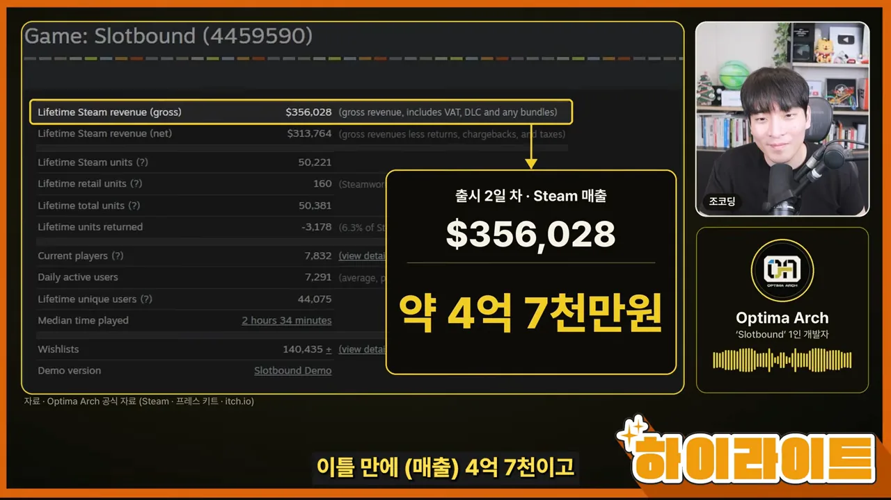
두 번째 장은 3일차예요. 총매출이 62만 7,592달러, 약 8억 원으로 늘었어요. 바로 아래 줄에는 환불·결제 취소·세금을 뺀 순매출(net) 55만 6,780달러가 따로 적혀 있어요. 판매량은 9만 4,239장, 환불은 그중 7.2%인 6,762장이에요. 플레이 시간 중앙값은 3시간 57분이고, 위시리스트는 14만 9,022예요.
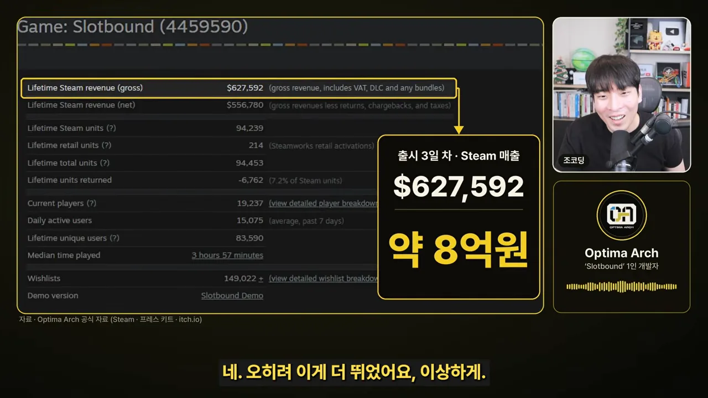
실감은 전혀 안 난대요. 정산은 다음 달이라, 지금 통장에는 다음 달 월세 낼 돈도 없어요. 진행자는 일주일 매출로 1년 매출을 가늠할 수 있다며, 1년이면 100억도 넘을 것 같다고 했어요. 이건 진행자의 짐작이에요.
누가 퍼뜨렸나
신기하게도 큰 유튜버들은 아직 정식판을 다루지 않았대요. 대신 중국 플레이어가 아주 많았어요. 데모 때 가장 크게 퍼뜨린 건 구독자 20만 명쯤인 Gohjoe였어요. 아래 화면처럼 그 체험판 영상은 83만 회로, 그 채널 인기 영상 3위예요.
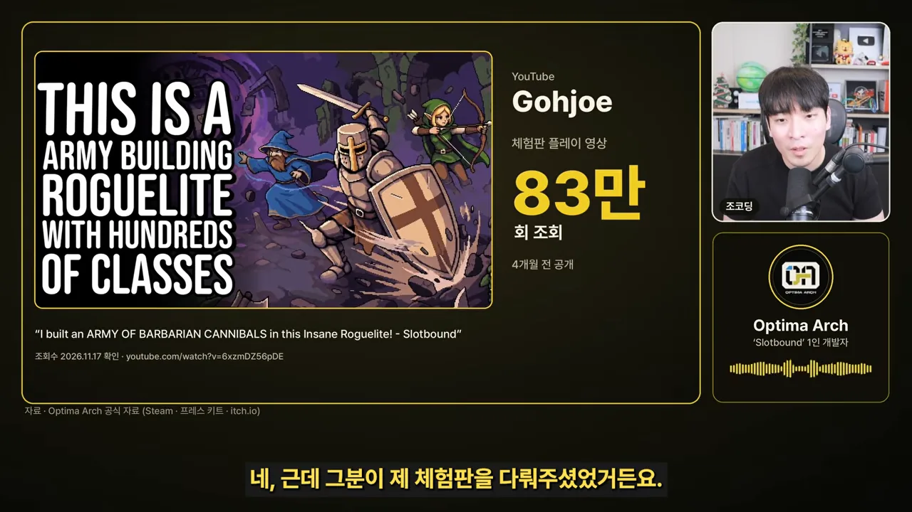
한국에서는 평소 즐겨 보던 풍월량 님이 이틀 연속 플레이해 줘서 눈물이 날 뻔했대요. 이메일을 보내긴 했지만 그 덕인지는 모른대요. 분명 게임을 보여 드렸던 다른 유튜버가 라이브에서 "핫해서 내돈내산했다"고 해서, 이메일이 스팸함에 간 건 아닌지 생각했대요. 앞으로 거의 모든 유튜버에게 다시 보낼 계획이에요.
중국 미니게임 복제 논란
중국 플랫폼에서 데모를 베낀 게임이 두 번 나왔어요. 설치 없이 휴대폰에서 바로 하는 미니게임이었고, 광고와 인앱 결제로 돈을 벌고 있었어요. 중국 유저가 "이거 네 게임 아니냐, 네가 허락한 거냐"며 제보해 줬대요. 영상은 이 대목에 게임메카 기사 화면을 띄워요.
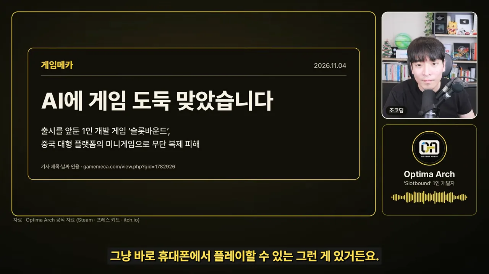
첫 번째는 거의 그대로 가져와 살짝 바꾼 것이고, 두 번째는 새로 만들다시피 한 더 잘 만든 개량판이었어요. 신고했지만 아직 남아 있대요.
진행자는 게임이든 프로그램이든 AI로 통째로 베낄 수 있는 시대라며 대응책을 물었어요. 그의 답은 단순했어요. 내 게임이 더 좋으면 된다는 거예요. 복제된 건 데모뿐이라 정식판 콘텐츠는 거기 없어요. 정식판은 보안에 좀 더 신경 썼지만 완벽할 순 없으니, 빠른 콘텐츠 업데이트와 사후 지원, 유저와의 소통으로 "저를 믿어 주세요"를 보여 주겠대요.
혼자서 방대한 콘텐츠를 만든 방법
혼자 만들었다기엔 업그레이드도 아이템도 많아요. 비결을 묻자 그는 재미없던 시기로 돌아갔어요. 그때 기획 방향이 여럿 있었는데, 지금보다 스케일이 작은 방향도 있었대요. 그는 힘들더라도 큰 쪽을 골랐어요.
개발자의 한계 대신 플레이어의 기대
그가 본 실패 패턴은 이래요. 개발자는 능력에 한계가 있으니 "이건 힘드니 줄이자"를 반복해요. 그러다 보면 게임이 플레이어가 원하는 모습에서 조금씩 멀어져요. 아무도 그 힘든 길을 안 고르니 성공을 못 하는 게 아닐까 생각했대요. 그래서 개발이 힘든 것보다 플레이어가 무엇을 기대할지를 먼저 봤어요.
이 스케일은 AI 없이는 못 했을 거래요. 브레인스토밍과 아이디어도 AI와 많이 상의했어요.
가장 공들인 두 가지: 유닛과 스테이지
유닛은 그냥 많기만 하면 '양'일 뿐이에요. 비슷하거나 겹치는 유닛이 있으면 흥미가 떨어지니, 서로 겹치지 않고 새로운 플레이 양상을 만들도록 가장 오래 고민했어요.
스테이지는 6개인데 전장이 크지 않아요. 아래 화면 왼쪽 아래 '6 WORLDS' 문구가 그 여섯 세계예요. 전장은 가운데 동굴 한 칸이 전부라 그 안에서 낼 수 있는 변화가 제한돼요.
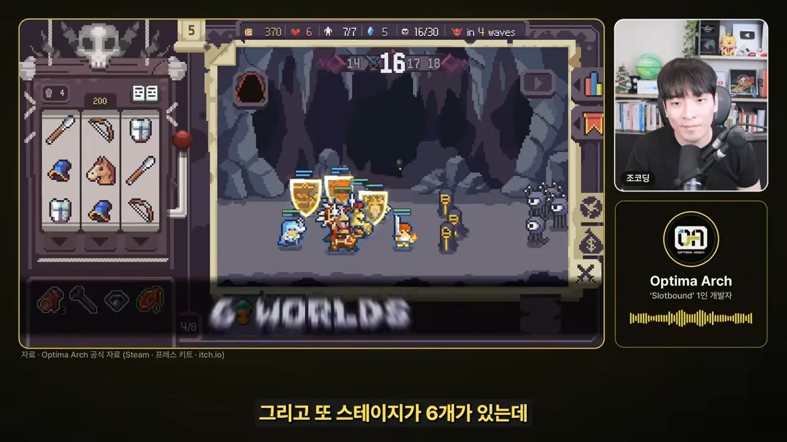
그래서 적을 단순히 세게 만드는 대신, 눈으로 체감되는 차이를 줬어요. 그가 중요하게 본 건 플레이어의 체감이에요. 스킬을 쓸 때 효과가 눈에 바로 보여야 재밌다고 봤거든요. 그가 예로 든 스테이지별 차이를 모으면 이래요.
| 스테이지 | 무엇이 다른가요 | 플레이어가 할 일 |
|---|---|---|
| 스테이지 2 | 싸우지 않고 기지로 바로 돌진하는 적 | 지나가기 전에 막아야 해요 |
| (스테이지 언급 없음) | 뒤쪽 유닛만 노리는 적 | 뒷줄을 지켜야 해요 |
| 스테이지 4 | 빠지면 행동이 느려지는 늪 | 늪을 피해 싸워야 해요 |
| 스테이지 5 | 죽을 때마다 자폭하는 적 | 머리를 써서 처리해야 해요 |
| 마지막 스테이지 | 땅이 갈라져 레인이 두 개가 돼요 | 병력을 두 갈래로 나눠야 해요 |
숲 스테이지 화면도 나와요. 위쪽 체력 바가 붙은 보스 앞에서 병사들이 엉켜 싸우는 장면이에요.
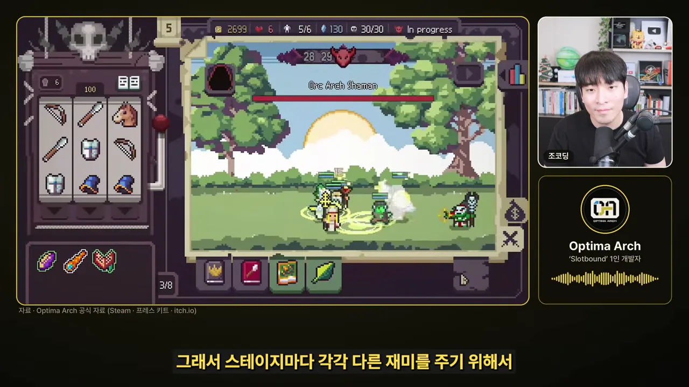
두 번째 번아웃
번아웃 두 번 중 첫 번째는 초반이었어요. 게임이 재미없으니 확신이 안 서고, 동기가 떨어지니 개발도 저절로 느려졌어요. 두 번째는 방대한 콘텐츠를 고른 뒤였어요. 만들 게 너무 많아 "못 하겠다"며 일주일쯤 손을 놓았대요. 결국 "할 수 있다", "정신 차려"를 혼잣말로 되뇌며 다시 앉았어요.
AI는 이렇게 평범하게 썼어요
진행자는 하네스를 만들었는지, LLM(Large Language Model) 위키 같은 걸로 게임 자료를 관리하는지 물었어요. 그는 LLM을 따로 썼거나 LoRA를 만들었을 거라 짐작하는 사람이 많다며 웃었어요. 실제로는 반대예요. 노드 연결 같은 건 할 줄 모르고, 복잡한 화면이 뜨면 뭔지 몰라 그냥 꺼 버린대요. 진행자도 최소한 코덱스를 CLI(Command-Line Interface)로 연결해 쓸 줄 알았다며 놀라요.
쓴 건 누구나 쓰는 앱이에요. 코덱스 앱과 클로드 앱, 그리고 이미지는 거의 다 제미나이 안의 나노바나나로 만들었어요. 새 도구는 조코딩의 주간 AI 뉴스와 라이브를 보며 쓸 만한 걸 저장해 두고 찾아 썼대요. 영역별로 정리하면 이래요.
| 영역 | 쓴 것 | 덧붙인 말 |
|---|---|---|
| 엔진 | LÖVE (러브2D) | 에디터가 없어서 골랐어요 |
| 코드 | 챗GPT 코덱스, 클로드 | 3만 원 요금제 두 개, 마지막 한 달은 클로드 200달러 |
| 이미지 | 제미나이 나노바나나 | 거의 전부 여기서 만들었어요 |
| 픽셀 정리 | Sprite Fusion Pixel Snapper | 그나마 덜 알려진 도구 |
| 효과음 | 일레븐랩스, 구매한 에셋 | 대부분 일레븐랩스 |
| 스테이지 음악 | 아마추어 작곡가 | 레딧에서 먼저 연락해 와 무료로 전곡을 만들어 줬어요 |
| 메인 메뉴 음악 | 저렴한 에셋 구매 | 수노는 안 썼어요 |
나노바나나 이미지를 진짜 픽셀 아트로
그가 꼽은 유일한 '덜 알려진' 도구가 Pixel Snapper예요. 아래 화면 왼쪽 창은 'Nano Banana off-grid pixels'예요. 확대한 원 안을 보면 픽셀 경계가 격자에 맞지 않고 삐뚤빼뚤해요. 오른쪽 'Fixed with Pixel Snapper' 창은 같은 해골 그림이 반듯한 격자로 정리된 결과예요.
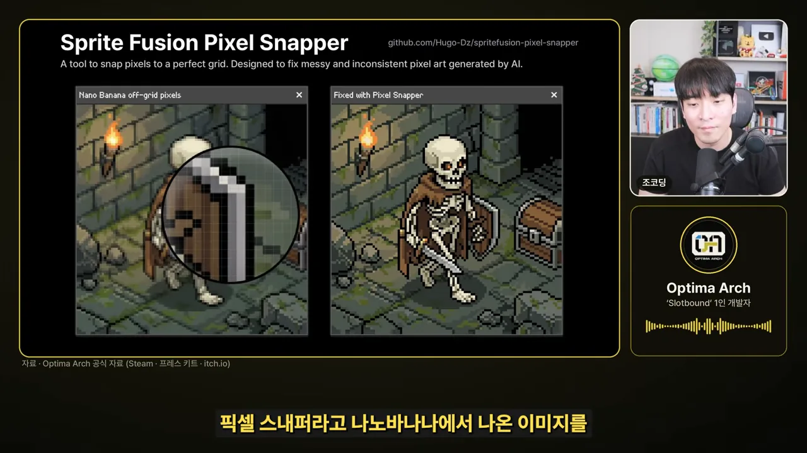
음악은 인디의 낭만으로
스테이지 음악은 레딧에서 만난 아마추어 작곡가가 만들었어요. 데모가 나오기 전 그가 올린 예고편을 보고 감명받아 먼저 연락해 왔대요. 묻지도 따지지도 않고 스테이지 음악을 전부 만들어 줬어요. 그는 이걸 '인디의 낭만'이라고 부르며, 처음부터 믿어 준 만큼 꼭 보답하고 싶다고 했어요.
앞으로의 계획과 조언
진행자는 지금 속도라면 1년 매출이 100억도 넘겠다며 팀을 꾸릴지 물었어요. 그는 고민 중이래요. 사람이 늘면 부딪히는 일도 늘고, 게임 개발도 사람 사이 충돌이 많다고 들었거든요. 웬만하면 혼자 가고 싶어요.
다만 다음에 만들고 싶은 게임은 스케일이 더 커요. 그래서 사람이 필요하다고 생각하면서도, AI 발전 속도를 보면 혼자서도 가능할 수 있다고 봐요. 진행자가 하네스를 갖추면 더 효율적일 거라고 하자, 더 배워서 나아가겠다고 답했어요.
슬롯바운드의 다음 목표
콘텐츠와 업데이트를 계속 더할 계획이에요. 유저 피드백을 빠짐없이 검토하고 종합해서 '가장 최적화된 중앙값'을 찾는 일을 멈추지 않겠대요. 사후 관리를 끝까지 하겠다는 말이에요.
게임 개발을 꿈꾸는 사람에게
본인도 초짜라 조언이라기보다는 경험이라며 두 가지를 말했어요. 영상은 이 대목에 모닥불 앞에 앉아 쉬는 기사와 마법사 그림을 띄워요.
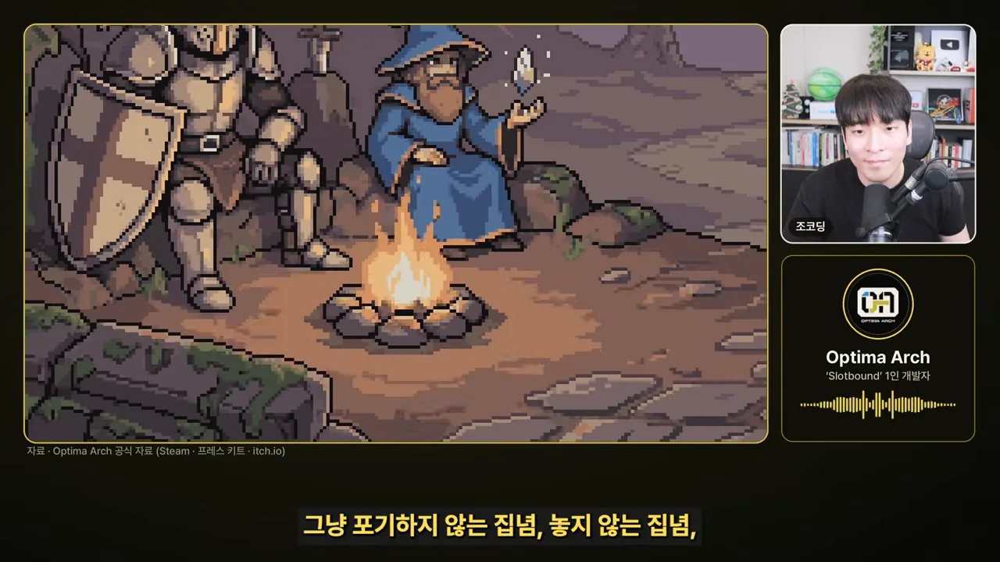
- 힘든 순간을 이겨내야 소수 몇 %에 든다고 생각하며 버티세요 — 그도 이 생각을 되풀이하며 두 번의 번아웃을 넘겼어요.
- 절대 포기하지 마세요 — 무엇을 하든 놓지 않는 집념이 가장 중요하다고 봐요.
그냥 포기하지 않는 집념, 놓지 않는 집념 그게 제일 중요하지 않을까
— 영상 38:00